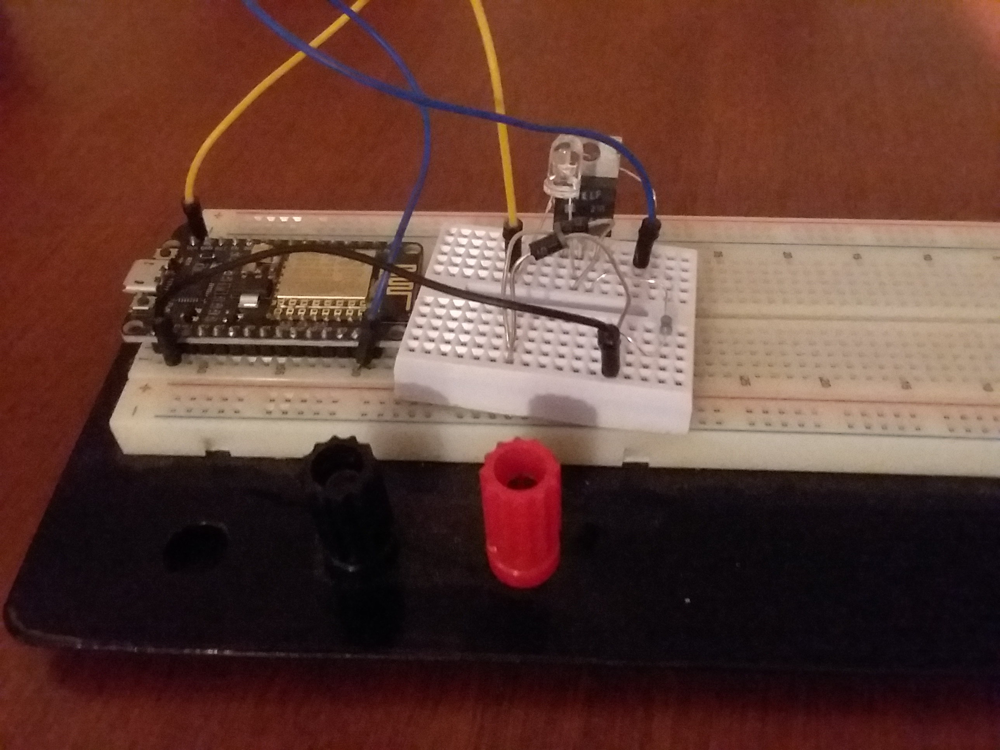
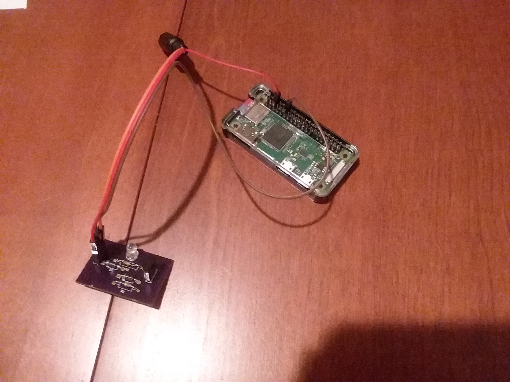

Just as I was looking for a new project to do, my wife asked me what I thought about trying a sunrise alarm clock. I looked at them and talked with her a little bit and decided I could build us something quickly that would suit the basic needs, let us test the idea, and cost less (before you count my time).
I started with these things in mind:
I had at my disposal a NodeMCU development board which uses the ESP8266 wifi chip and is Arduino IDE compatible, so I set to work creating an HTTP server to handle our needs.
(I’m not going to go into a whole lot of detail on this software rev as I have completely abandoned it, but I will post the code here for the curious).
Next was the light. After some searching on my usual sources, I selected the LED White T1-3/4 at Jameco Electronics
I knew that running this LED at full brightness was going to require a bit of current draw, and I didn’t want to fry my dev board, so I did some looking to see if I could find an example LED driver that used a transistor for the main current gate (my own previous attempts to design this from scratch had not worked, and had fried the dev boards). I wanted to use an NPN transistor (like the 2n2222a) to make sure it would be easy to work with (or at least in my mind).
The basic layout is to have a control signal from the dev board turn the transistor on and allow current to flow from the LED to ground.
Because and LED is almost a short, you have to put a small resistor in series to make sure there is a little bit of a current limiter.
The problem here is that the control signal will flow through the transistor to the resistor to ground as well.
And the effect is the voltage at the gate and at the sync match the control signal and the transistor does not turn on
(it needs at least like .7V to turn on, although that varies by transistor).
On top of that, at 5V, the control signal is outputting 5V / 100 ohms = .05 Amps
– which is on the border of what you should pull from an Arduino.
I knew I could reduce the current by putting a second resistor in series with the control signal.
However, this does not solve the problem with not being able to turn on the transistor.
After some Google-ing, I found a post by John_Smith that uses two diodes in series to solve the voltage level problem (I remembered from school that the drop across a diode tends to be about .7V, so putting two in would lock the input to the transistor at roughtly 1.4V and pull it to ground once the control went low). This solved my issue.
{% assign url="https://www.multisim.com/content/zoWkatYerktfgGoRc4yVGB/high-current-led-driver-arduino/open" %} {% include circuitPreview.html %}This solved my control issues. You’ll notice that I didn’t specify the voltage level or the transistor I used, I opted to get the LED that I did because it handle a decent current – 30 mA – going through it. That would allow me to set the input voltage at anything I wanted up to 30V to get the desired brightness (although I do not expect much of a visible difference beyond about 5 or 6 V).
With this bread-boarded, it was time to code a server.
Here, I relied heavily on the ESP8266 group's documentation for getting my Arduino IDE setup and going.
Couple of things I did in the code:
This worked pretty well for us, but we eventually decided that week-day and week-end with the whole thing being on or off wasn’t enough control (in particular, we wanted to have it off on Saturdays without having to remember to turn it back on for Sunday).
After we had been using this alarm for a couple of weeks,
we were pretty sure we liked it and that I should proceed to making it a little more permanent.
So, I took the schematic for the driver and used MultiSim/Ultiboard desktop (which I have access to through my day job) and designed a PCB.
I ordered off to Oshpark and had a couple made.
I soldered one up, and that was the install that went into place in our new apartment (there was a move in there that caused a delay in getting things done).
Around this time, we started having issues with my Wi-Fi router
(hey, I bought it from Goodwill and it was two years old, so . . . yeah this was coming at some point).
When we got that all sorted (the first replacement we got didn’t work),
I had a lot of trouble getting the NodeMCU to connect to the new router.
I did find that after letting it sit for about a week, it connected right up, but that’s not really a workable solution
(I’m not sure what the problem is, if it’s related to IP reservations which I have set to a 24hr period, or what).
On top of that, I had never been able to get the hostname to set correctly and the new router didn’t want to assign it the reserved IP I wanted it to,
so I was having to update my server relay code every time I fought the connectivity again.
Eventually I had had enough and decided to order a Raspberry Pi 0 to run my circuit board.
Now, the original circuit design would pull about 30 mA, which is too high for the RasPi-0 gpio pins ; so, it was time to rev the hardware again.
I decided to increase the input resistor to 1k and see what that did. That dropped the expected current down to 3mA, which is sufficiently low.
Conveniently, this meant I could re-use the same boards I had made earlier and just swap one of the resistors for a higher value.
{% assign url="https://www.multisim.com/content/hGu5osguW4YqiW9e4sXkK8/high-current-led-driver/open" %} {% include circuitPreview.html %}You may have realized earlier that the NodeMCU runs Arduino C, and the RasPi runs Python (or at least that’s the most pushed programming language for it. Since it’s a Linux machine, it can run compiled C code). I set to work translating the concept of the web server and configuration to Python.
Couple of things I wanted to take advantage of:
One last thing I had to take care of, piping 5V through the RasPi was not working, so I soldered a barrel jack to provide Vin to my LED Driver, with a ground tied to the RasPi.

Due to the fact that we decided we liked this, I opted to shorten my time to market by delivering the absolute bare minimum needed to make it work.
There is no web interface on this version (although I did create an HTTP server to set it up), and the command line interface (CLI) is extremely limited.
To use it, one must:
You'll find the current source for this project on GitHub
And here's where you can download my Gerber files (or order the board) on Oshpark .
I realized after the fact that I should have used the silk screen to label the Vin, Control, Ground pins as well as the Collector, Emmitter, and Base pins on the transistor.
I hope you find this useful.